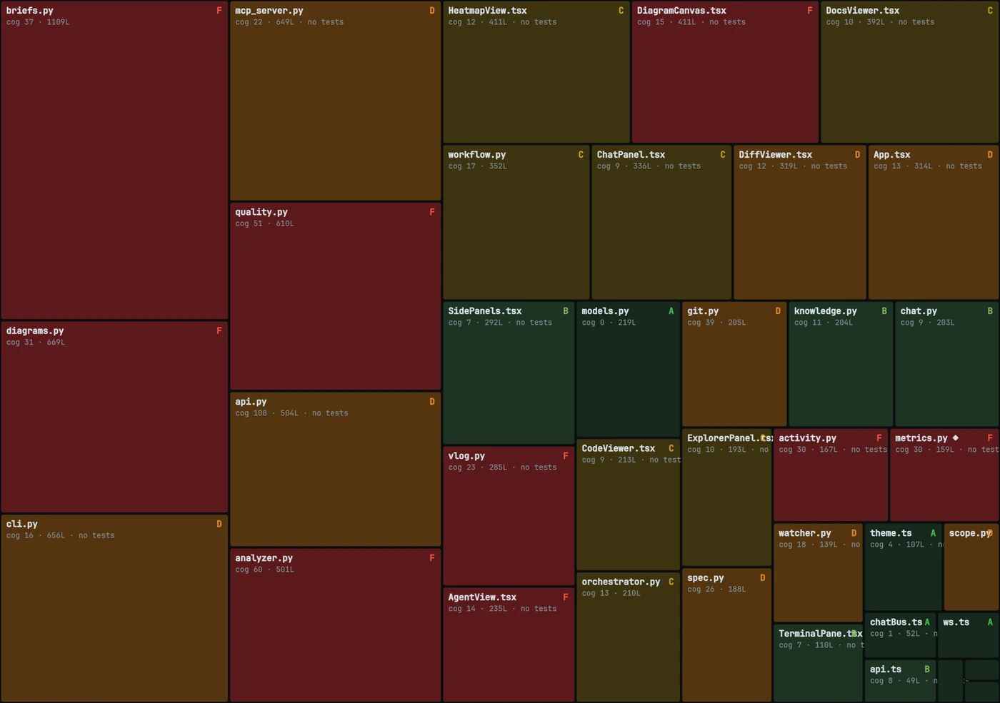
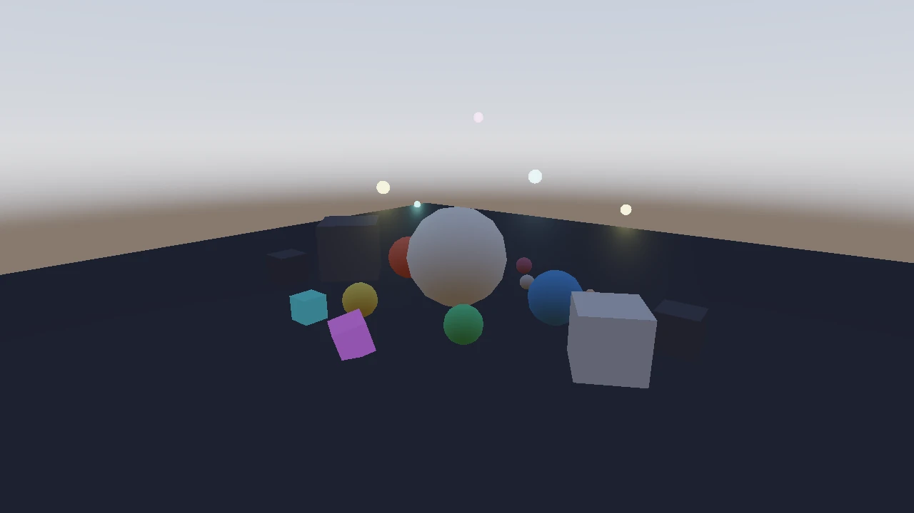
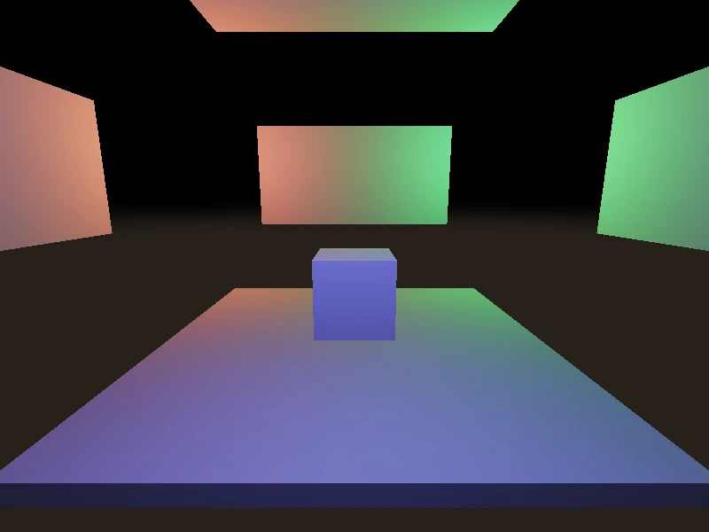

I like to figure out why things work. It is probably why I became an engineer.
Real-time voice, self-hosted models, and agents that ship. I take vague problems to production fast, and keep the quality gate honest.
Projects
three
Plate ICapsicum chinense
No. 1
harness Active build
A governance layer that stops AI coding agents from cutting corners.
I got really tired of hearing "You're absolutely right!", so I did something to fix it.
The problem I wanted an agent I did not have to babysit. One that could not quietly skip the tests, fake a green run, or wander off-scope the second I looked away.
What I did Wrapped it in a sidecar that watches every tool call. A loop state machine locks the commit until the evidence exists: passing tests, two adversarial reviews, a clean post-fix run. Detectors for secrets, scope creep, and drift feed corrections back mid-session.
Claude Code agent→hooks intercept→loop gate→tests · 2 reviews · post-fix→commit
↩ detectors (secrets · scope · drift) feed context back to the agent, mid-session

harness analysing its own codebase: a cognitive-complexity heatmap, grades A to F, with untested files flagged.
Python
agent hooks
MCP
state machine
evidence-gated commits
adversarial eval
Plate IIBambusa tulda
No. 2
FOUNDRY Active build
A 3D game engine whose primary user is an AI, not a person.
What does a game engine look like when the user is a model, not a person?
The problem If an AI is going to build 3D worlds, the engine cannot hide behind a GUI. The interface has to be the API itself.
What I did I built one in Rust to find out. The AI drives every action through 45 MCP tools, the engine returns real PBR renders, and a viewer lets a human check the output. Around 500 tests hold it together.
AI agent→MCP · 45 tools→Rust engine core→PBR renderer→viewer + frames


Real PBR frames the engine rendered, from scenes an AI agent assembled through tool calls.
Rust
MCP · 45 tools
PBR renderer
Vulkan
~500 tests
Plate IIICamellia sinensis var. assamica
No. 3
jarvis Local-first
A local-first voice assistant that types, rewrites, and acts on a word.
I type for a living. I would rather not do it at home too.
The problem Dictation is either fast or private, rarely both. I wanted instant text at my cursor with nothing leaving the machine.
What I did Put the whole pipeline on my own GPU. Press a key and talk, Whisper turbo transcribes and it pastes. Say "Jarvis" first and an intent router sends it through a local model to clean up before it lands.
key / mic→VAD→Whisper turbo→intent router→cursor
↳ the "Jarvis …" branch routes through a local LLM rewrite before paste
No screenshot yet, it is a Windows Tauri app. The diagram above is the whole of it.
Python
Tauri
Whisper turbo
Ollama
VAD
intent router
CUDA
Field station · dusk
My PC specs
Ryzen 5 7500F6 cores · 12 threads
RTX 507012 GB VRAM
16 GBsystem memory
WSL2Ubuntu on Windows
Everything runs out of a tmux grid on one machine, a Ryzen and an RTX 5070 under WSL2. The panes: a Claude Code agent mid-task, the harness loop guarding the commit gate, the smoke run and its recorded reviews, and my own custom memory layer for the agents, the secret sauce that keeps them sharp across sessions. I can drop into any of them, at any stage, and take over.
That is the whole point of the setup. I move between testing, validation, feedback, and analysis whenever I want, and hop across VMs and environments without losing the thread, while the harness keeps the agents fenced: hooks block risky git, commits stay locked until the evidence exists, and drift gets caught mid-session. Freedom for me, guardrails on them.
tmux · ridim@wsl2 — mission control
0 · agent / build
› building intent router
✓ 14 files touched
◦ waiting on review gate…
1 · harness / loop
loop: adversarial
gate: 2/2 reviews ✓
commit: locked until post-fix
I want AI that does real work and can prove it earned your trust. Voice you can talk over. Agents that ship and leave a record of why they were right. Software built for machines to run, with people steering.
Same instinct every time: take a vague problem and get it to production, fast and carefully. I want more of that.